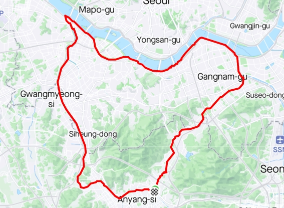
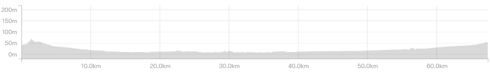

자전거길 코스
|
코스명
|
하트 코스
|
|
코 스
|
인덕원역-과천정부청사역-학의천 합수부-동작대교-여의도-안양천합수부-안양천-쌍개울-인덕원역
|
|
거 리
|
68km
|
|
시 간
|
2시간 22분
|


즐거운 라이딩 (2022년 5월 7일)
즐거운길에서 남기고 싶은말..
하트코스는 초보자에게 장거리 훈련을 위한 안성마춤인 코스이다.
나는 몇번이고 하트코스를 돌아보고푼 마음이 있었으나 이래 저래 기회가 없어 매번 반쪽짜리 하트 및 불완전 하트만 그리고 있었다.
오늘은 동호회 일정도 없고 오로지 나혼자 코스를 갈 기회가 생겨 하트코스를 선택하여 온전한 하트코스를 한번 그려보기로 하녔다.
출발점을 인덕원역으로 하고 인덕원역에서 과천정부청사역을 지나 양재천 자전거길을 따라 라이딩 길을 잡았다.
평소에는 10시가 넘은 시간이면 많은 사람들이 걷거나 라이딩을 즐기곤 하였는데 오늘은 어린이 날고 샌드위치 연휴가 있어서인지 한적하여 라이딩하기 좋았다.
학의천 합수부까지는 길이 워낙 좋아서 힘껏 달려도 보고 주변 경관도 보고 하면서 나의 패에스에 맞추어 라이딩 하였으며, 합수부를 지나 한강에 다달으니 살짝 앞바람이 불어오기 시작했다.
한강에 도착해서 라이딩하니 날씨도 풍경도 좋아 쾌적한 라이딩을 할 수 있었다. 그래도 사람이 많으니 조심조심 라이딩!!!
오랜만에 여의도를 지나니 푸른 녹음이 나를 반기고 경관에 취해 정신을 차리니 어느덧 안양천 합수부에 도착하였다.
안양천 합수부에서 한숨돌리고 다시 안양천을 따라 쌍개울쪽으로 방향을 바꿔 내달렸다. 이번에는 한강보다는 인파가 적어 30km/h정도 조금 다리에 힘을 주어 보았다.
몇주전 코로나로 인하여 조금만 속도를 올려도 숨이 많이 찼는데 이제는 많이 괜찬아 진것 같다.
쌍개울에서 우측으로 다시 인덕원역쪽으로 방향을 잡으니 약간의 오르막 길이지만 길이 좋고 실개천이 아름다워 라이딩하기 좋았다.
처음 라이딩을 할때를 떠올려 보니 처음에는 한강만 가면 뿌듯한 마음이 벅차올랐었는데 오늘 하트코스를 돌아보니 68km정도 인데도 별도 힘들지 않은 것으로 보아 체력이 많이 길러진 것 같다. 이제나도 겨우 초보를 벗어난 걸까?